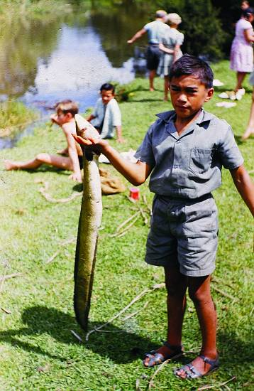
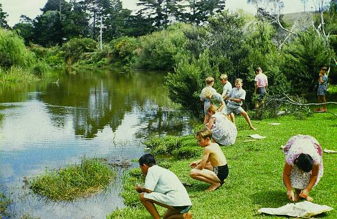
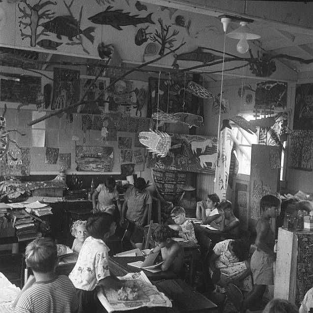
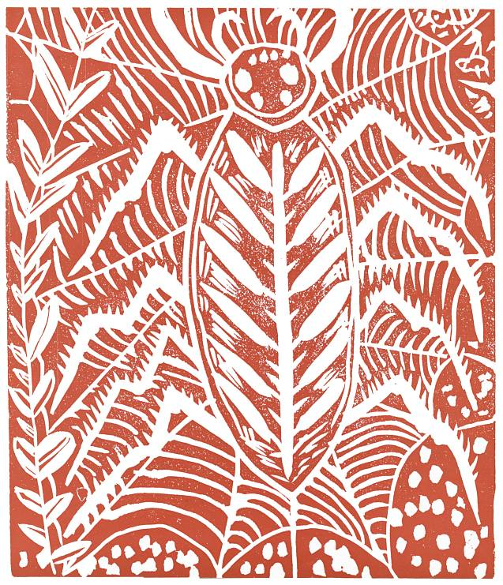
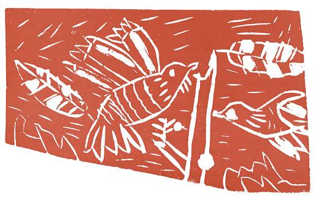

FOLLOWING the first work with thought writing about things in the classroom and our attempts to select the valuable elements from a mass of thought, I tried to direct the children's attention to other subjects, at first a series of familiar places.
If I asked the children for an ordered essay on one of the many places they knew, they would generally fail, as the process of essay writing on a given topic so proves. Thought writing about a place does not need to be concerned with a story. The child's knowledge of a wash-house, for example, is based on a number of observations of various different aspects of such a room, and I am inclined to think that children become interested in one aspect at a time—the copper fire, the soot, or the wood heap. He will examine the copper again and again; then perhaps he will experiment with the fire and feed it. I have had much evidence from the children's writings that supports the idea that they establish a familiarity with a place on the basis of numerous unrelated aspects of it. They may know a lot about daddy-longlegs, spiders, the copper fire, wetas in the firewood, the smell of soap, and the stain of the ‘blue’ in the wooden tubs long before they establish relationships between these things. Thought writing about such a place seems, indeed, to aid their seeing of such relationships. In many ways this understanding by the child of intimate details about the spiders, the fire, the stream, and the dark corners as a continuous set of things that relate each to each, explains why children cannot write essays that adequately tell all about a washhouse and wash-day even if they call their minds to the task. Nor can they make criticism of a piece of such writing as a whole. I pointed out earlier what the child does to the detailed imagery and what he recognises as characteristic of himself and his thinking. As he writes his thought he records these associated ideas as a stream of conscious recollections. If and when the child does this, and if he does it often enough, I believe he becomes able to make larger and larger criticisms of literature at his own level and, in time, of the writings of other people. This sort of experience allows children to develop their powers of reasoning in terms of literary criticism.
Although the rather blunt approach of the direct request for ten minutes’ thought writing to a set topic such as the kitchen proved reasonably successful, we found that a great number of places about the school and home could be introduced into writing through painting, writing, and drama. In each situation I saw that the children were able, through being freed from a demand for exactness in writing, to come nearer to describing their real experiences and their inner thoughts. It seemed reasonable to ask for a stream of thoughts starting from any subject I chose, for the mind saw that the individual was not damaged or diminished as he might be if he has to write at length about a subject that he knows little about.
May's Warmth of the Kitchen, Rudolf's / Went to the Apple Tree, Clifton's Fireback and Glennis's Hills indicate the kind of writing that comes from this type of request.
WARMTH OF THE KITCHEN
‘The warmth of the kitchen; the stove with the red hot elements smoulders with heat. The cupboard door swinging backwards and forwards. The dribble of the sink tap dripping to the sink; the egg beater buzzing.’
MAY, 13 years
I WENT TO THE APPLE TREE
‘I went to the apple tree, I was talking. My father said, “Be quiet.” Mum hit the dog with the broom. I kicked another dog. Eric said, “Come out of the rain.” ’
RUDOLF, 8 years
FIREBACK
The sooty curved fireback
Where the goats stand and flicker
And go out.
And the flames rush up and knock them off
And they go up the chimney.
CLIFTON
HILLS
Scrub hills, sheep tongued hills, sheep tramped hills,
Mountain hills, rabbiter hills.
The brown patches blind my eyes;
Scrub pointed out like rows of trains that drive along the rails
Sheep happy, quietly eating.
Starlings picking the ticks off the patchy green hills
Twitchy heads move up above the bluegum trees.
Sheep rub on the bark trunks, dead gorse, live gorse
Growing on the hills.
GLENNIS
In some cases the children were taken to visit various places and the same sort of work was repeated. This certainly aided the flow of thoughts and helped the smaller children to become aware of their environment.
Olive's piece is not so matter-of-fact as her previous Mice, written a year earlier, and shows how quickly a young child may become conscious of style, while Fenella's piece is an outstanding statement for an other-wise not very expressive person. ‘I hear the idgiebidgies (the native cicada) go crick, crick, crick’, and her observations of the blowfly chasing the piece of paper are the kind of observations we liked.
A PLACE
‘When we went for a walk I heard the long-tongued dogs barking; buzzing bees busy in nests. Short-beaked birds were singing sweetly in cool-leafed trees, which reflected in the cool twisted river. I heard the leaves rustling softly and light-winged cicadas singing. I saw the long shadows of trees dancing in the water. The flax flowers hung heavily on broken stems.
‘I could hear birds singing, popping buds, shivering trees, rippling waters, romping leaves.
‘I could see bubbles rising, a tree a-swinging, buzzing bees, smooth stones and little chirping birds.’
OLIVE, 6 years
A PLACE
‘A bit of paper blown down the path and a nosy fly chases it.
‘I see shadows dancing in the river; throwing sticks in the river. Sticks make rings, they grow bigger and bigger and make one big lovely one.
FENELLA
From this approach, a series of possible tasks was drawn up in a list from which the children chose their own excursions to the outside.
1. Go and find several very beautiful stones.
2. Go and look at the bikes in the shed.
3. Watch the drains working. Turn on a tap.
4. Go and look at the corner post (where there was a starling's nest).
This direction led to David's Blackbirds (a small perceptual error, but a good story—he meant Starlings).
BLACKBIRDS
‘Blackbirds that sing all day up in our rough spacy pine tree, where the branches sprout out in all designed ways and where the sparrows live in thousands.
‘Blackbirds that fight for nests away up in our chimneys and under the roofs of our houses and in the strainer posts in the corner of our garden where our cat, Tom, tries, tries to catch him.
‘My blackbird is too cunning for Tom. But Tom, our cat, has five sons growing (and they have long tails) and they are getting as big as their father. Days are going quickly.
‘ “No,” says the cat Tom, “We must keep trying to catch that blackbird; his babies will be flying soon; his babies are growing fast, and they are nice and fat.” Just then the blackbird flew out and by the time Tom got there, Tom said, “The blackbird has a nice nest.” (the bird had gone). “He has a smooth hole and when he goes down, he just slides down. You and I are just young now, but our sons will help to catch some birds when they grow older.”’
5. Go for a walk to the ploughing next door.
This led to Clifton's Seagulls.
6. Look down a crack in the concrete.
7. Listen to the sounds of the swamp.
Extensive poetry and stories such as Sarah's arose from this observation.
SEAGULLS
‘The seagulls flew in mobs across our paddock and some flew away and landed on the hill next to ours and then one by one they glided down and turned a circle and landed in our paddock by the drain which leads down to our pigsty and another one flew down and landed with the rest of the seagulls. Then our dog, Wally, chased them and they flew and turned a circle again and landed by the drain in the same place. They cooed at each other as they were pecking and scratching for worms.’
CLIFTON

John and eel

Annual fishing picnic 1960
SOUNDS OF THE SWAMP
Closed the doors of sound
Near the sucking swamp,
Wandered by bitterns.
Bubble, bubble,
Up rise the sounds.
Ears of the swamp
Damp and clear,
Cleaned the birds
From a distance
Quietened the noises.
Boiling around the edges
Like wild squawkers.
Swifdy shivering in ease are birds,
Airing their soft feathers in sound.
JENNIFER, 12 years
Jennifer first heard the silence in the swamp, but soon she became aware of new kinds of noise, such as the ‘bubble, bubble’ of swamp gases. Her attention is taken with the ideas of various kinds of sounds and hearing throughout. When she wrote ‘ears’ she was overlapping the two ideas of ‘airs’ and ‘ears’. That she intended both meanings, without having the technical knowledge of an adult poet, makes the poem all the more remarkable. The idea that sound is a tangible quantity as well as the ‘air’, and the air although damp is also ‘clear’, implying sound, is outstanding. She explains the movements of birds drying wings, ‘cleaned the birds’ in as compact a use of words as any poet could achieve. There is an imaginative feeling about ‘boiling around the edges, like wild squawkers’ which isn't explained fully.
As a child she did not have the experience to deal with the technical problems (they, however, would have puzzled most adult poets) but the ideas and images make this a marvellous poem.
SWAMP
‘As I push my way past the swamp, I looked around and saw the rusted water stained in my dog's fur. Gently I pushed my way past, closing my eyes so that the wiwi* wouldn't find their way quite so easily in. Now it is altogether too late for I had fallen into the sloshy swamp water hole. Struggling to get out, I could see my dog in the same way, struggling with all his might.’
SARAH
8. Listen to the Telephone Posts.
‘I press my ear to the humming telephone pole; it sounds like the sea far, far away. I think of the traffic in the city. I see something close to my eyes. I take my ear away and kill an ant. I slowly put my ear back and the noises come closer, like a wave it comes loud all of a sudden as I put my ear close. I tramp on a stick that snaps and then I run and walk back out of the telephone hum. I think I can still hear it when I'm across the road. I look back at the long pole across the road that a long crack has run down. I walk back and look into it and press my ear close to it and think of what I might write.’
9. Feel the shape of a tree or branch.
FEELING A PINE CONE IN MY HAND
‘The textured pine cone round and pointed like a dotted shoe, chapping in the palm of my hand with unusual feeling and pressing shell designs on the linings of the palm of my hand. Slipping from my fingers. Curiously landing in the twigs. Spare gaps shaded the dark colours of the rough cone. Slowly pushing the stalks of grass, leaving shadows of a sharp figure behind, hidden in the shape of the moss, covered with hints of soil.’
JENNIFER
10. We found it useful to write about unfamiliar things that were still close enough to our experience to warrant some attention. Some of these were imaginative ideas such as that of the inside of a bottle, the inside of the red hot kiln, inside an engine. Then there were topics such as the engine of a car which Mavis wrote about.
ENGINES
‘The noise is all that I can understand. Noise is all that I know and understand.’
MAVIS
I helped the children to look further into their study of places and to see every detail and details within details, and to think also, of their own changing feelings about the places and about their looking; people can be just as interesting as places, especially the self. Personal feelings such as instances of love, hate, and fear, are also useful beginnings. Thoughts about story or historical happening can also be fun for children.
The experience of going to observe some phenomenon such as the starling in the corner post did not imply that the child should write about that happening, but often as not they did. Whereas most of this sort of writing was fit to present to other children, there remained much that was really a collection of what appeared to be haphazard wanderings. But it appeared that thought wanderings could all be about one topic such as Glennis's Shop, in which points of experience are lighted by a thought here and there. The whole is quite acceptable as prose or poetry, whatever the child desires to call it. Glennis called this one, Shop,
There are bananas that I can see;
there are drinks on the shelves,
ice-cream in the freezer as hard as bullets,
When I see something, my mouth gets hungry.
Beer and biscuits and bottles on the shelves
Waiting for someone to take them home.
Wood for shelves. Rotten iron on the roof.
Sweets that smell, waiting for people.
Chewing gum chewing, chewing gum, glop, chop,
Their teeth crack against the chewing gum.
The recognition of small excellences had been part of our experience with criticism of poetry and prose writing so that Glennis's piece was praised for the ‘elements’ of expression as well as the whole ‘architecture’ of the piece. ‘Beer and biscuits and bottles on the shelves. I like to say that,’ said Mavis. ‘Wood for shelves. That reminds me of the feeling I got from that poem you read us last term, Sir, by a fellow of the same name as the Australian four-minute miler.’
‘Eliot wasn't it?’ added Tim.
‘He beat the four-minuter if I remember correctly,’ someone said.
‘What, at poetry or running?’
‘It's still a good feeling,’ said Tim.

Some thoughts wandered from one idea to another, as in Ken's Happy Sounds.
HAPPY SOUNDS
‘A warm feeling is going through my body and noises wander about outside. Rattling of windows banging backwards and forwards. Pots on the ledge, their designs wriggling around them. Our paintings on the wall, they look around them. Mobile trees in the wind. Birds flying hardly, around them.’
In this piece Dennis and Ken marked several thoughts that they agreed were better than others and that might interest the rest of the writing group that morning. ‘Pots on the ledge, their designs wriggling around them’ and ‘a warm feeling is going through me’, ‘mobile trees in the wind’. We recorded these separately on a page which we headed ‘We Liked These Thoughts’.
We published sheets of such statements in our monthly magazine, but I felt that we should make more of these interesting thoughts. Ken's paragraph does not say much about anything, but as we saw earlier some altogether unsatisfactory writings later blossomed into stories of real value. I felt, too, that if I asked Ken to try to develop one idea on the basis of one or two associated thoughts about it we might again expect a process of some satisfaction to overtake him.
Ken took his ideas away to work on, for he quickly saw that the continuity of some writings such as Glennis's was missing in this piece. His approach was not wrong, and I did not want him to think it was. He began thinking more deeply into his subject and came back soon after with an expansion of his ideas, Mobile Trees.
MOBILE TREES
I can see
Out
Of the window
On the very, very very top
Of a tree
A sparrow is balancing
Himself.
Trees mobile around
And birds are flying hardly,
Their feathers stick up like roosters wild.
KENNETH
BLOWFLIES IN THE CLASSROOM
Early in the afternoon when the cows come home;
Around the rose bush, munch, munch of the cows
Eating the roses.
But in the house where the flies buzz,
The flickery of the light
Makes the flies buzz off.
GLENNIS
Ken could well write about ‘the pots on the ledge, their designs wriggling around them’ or the work of birds and trees. In a similar way children select one idea, shape, or design from a painting and they develop this and associated ideas into painting of greater satisfaction to all of us. This process suited some people more than others. Mary, Jennifer, and Mavis rarely had to reconsider such a piece of writing, but Glennis and Ken used this process often. We felt more justification for our inclusion of the pages of ‘Thoughts We Like’ in our publications.
THOUGHTS WE LIKED
I hear the thistle seeds crackling.
BRUCE, 8 years
The flickering light wears its dripping candle to an end.
DENNIS, 10 years
People look like flowers with clean faces.
MARILYN, 8 years
Dirty things with stalking feet.
MAURICE, 8 years
Wiwi sheep tunnels.
CLIFTON, 11 years
CENTIPEDE
I poked it and it flung its head and
twisted its crawling body and a
little centipede-feeling twig touched
my leg. I ran for my life onto the
lovely-feeling grass.
ERIC, 12 years
Shell shapes curled round and round
Like leaves long fallen
Curved and brown,
Earth coloured and dead.
ANONYMOUS
This was a piece of writing that I picked up from the floor. We couldn't recognise the hand—an argument against uniform cursive writing.
A study of spiders and flies begun about this time provided the first pages of what we came to call the full value of our work. Every thought, even the single image, that was thought of value was collected for our next publication. This gave the children an immediate feeling of intense ‘belonging’ to the magazine, and gave a tremendous impetus to the quantity of their imaginative statements.
The wind-trembled web with cross bars closed.
GLENNIS
Wolf spiders pounce like cats catching birds and mice.
MARILYN
I give the spider a poke and it spins its long elbowed legs. Sometimes it trembles to itself.
GLENNIS
The Daddy-long-legs shaking in the soft breeze of day wind. I poke him with my livery finger.
WALTER
Waiting for a careless spider to come and get caught in the thin thread of its soft web.
CLIFTON
Spiders climbing on web painted walls.
ERIC
Spider hunters, catching silver leg-paralysing spiders and taking them and walling them up with mud banks.
ERIC
SPIDERS
‘When I poke the spinning spiders they spin dizzily around. Sometimes I pull his long elbowed legs off and I poke him a little with a burnt black stick. When I let him crawl on my hand, I squeeze him and he dies dead in my hand, curled up.’
ERIC

Spider by Eric
DADDY-LONG-LEGS
‘The daddy-long-legs spins around and around and goes in and out like a cement crusher. He crawls up the roof, sticks his glue, then slides down; down like a sinker on a line. I gave him a poke and he spun around the other way, but faster. When I stopped poking him, he rocked on his web bouncing on his long spindly legs, then he slows down until he is really still. He crawls away up to the roof and can't be seen any more so I go and look for another one and do the same thing.’
JOHN M., 11 years
DADDY-LONG-LEGS
Daddy-long-legs quickly spinning around
A giant ringer poked softly on its jointed body;
Then its legs folded in and out and playing exercises.
It scrambled up the rotting board, hung from its spinnerets
And pushed downwards, not touching
And the air bounced it upwards.
A sticky web waited unharmed … a long bent spider crept
A stiff fly homed to the glued web.
JENNIFER, 13 years
‘Little flies with their fans on their sides.’
ELIZA, 12 years
‘Fingers have mouths that swallow up the buzzing flies.’
CLIFTON
‘I poked the spider and he went around like a fly in a web.’
BRUCE
‘Which way did he turn? What would he do when I poke him: Would he do it or not? Would he run away if I went up to him? Was he a daddy-long-legs: Was it a male or a female? Where was its web? Did it have a web? Did it have any babies? If it did, where did it keep them? And do they know their mother?’
JOHN M.
Glennis wrote a more intense statement about spiders. This and her Starfish are triumphs for a girl of only average intelligence. I felt that she was successful because she reconsidered her subject before going on to write again. Reconsideration seems to be a primary principle of creative education.
FLIES SWALLOWED IN GIANT'S FINGERS
Flies that are swallowed in the big hearty giant fingers
That clang together under the figure's face
Tame people looking
Wild people running away.
STARFISH
In the dark limpid pools
In the blue blossom pool
On the numb-footed rocks
The scattered starfish whisper
On the blurred seaweed.
The brown bubbled seaweeds,
Floated on the blossom waters.
It lay on the skin-footed rocks
Lying dead, swept up
On the rocks.
GLENNIS
I was left wondering after these experiences. How was it that many preferred the simple statements of small poems to the larger and more detailed prose accounts of the same thing. I concluded that it was because the longer work did not approach the quality of, say Glennis's, that all children had in them a gift of seeing directly and a talent for expressing their vision with truth and power. This talent or gift is a large part of what I mean by creativity. It is there in all children, I feel, but it will not come to the surface unless it is recognised and encouraged.
In a discussion which lasted most of a morning, the children explained.
‘Remember the “picture” poems? They were good.’
Of course this statement gave me no cause for delight, especially the past tense. What had happened to this form of expression, anyway? Why hadn't I encouraged that sort of writing? Again the children were directing us all back to this basis of thinking about values.
‘I think “picture” poems are much like these shorter good things,’ said Jennifer.
‘Could they be turned into small poems?’ asked Mary.
‘Or could we just forget about them and write small poems and stories as we feel,’ said Ron.
‘And don't use our good thoughts, Ronny. Heck no!’ said his sister.
‘I didn't mean that at all. I meant that we shouldn't just try and say smart things.’
‘You've been trying too hard Ron,’ said Valerie. ‘It comes easy if you don't try.’
The problem was indeed a big one, but we saw that small poems were really here to stay and would become a part of every week's writing as well as the basis of our recognition of the value of a piece of writing. The general value and architecture of a piece of writing eventually would be the final consideration of the papers presented, but the smaller statements of sincerity and meaning would be the 'stepping stones’ to this understanding. I found always that I had to allow for the fact that the process of expression was one of generating a partial expression which demanded a fuller release. The selection of one group of ideas from an established individual's story, painting, pot, song, or drama can affect this sort of thing.
Sometimes I would work out part of a story for dramatization for the children to complete. I saw that the building up of expression was the extension of simple sincere thoughts into an expanded detail ‘in depth’. It is enough to assist the child to recognise his good ideas and to encourage him to write further. I don't think we can help a child with his own ideas. That part is up to him. The most desirable situation which demands this release is that which the child himself creates. This is the point where many children will otherwise leave off working.
It seems to me also to be a basic principle of this form of education that we evaluate our work at regular points and go on when necessary to new points of expression. The children have to begin from something genuine and personal and come to realise it more fully or exactly during the expression. I had to see, too, that they might very well make a direct statement of some intensity that did not require further discharge.

Goldfinches feeding by Kathleen
____________
* Wiwi is a Maori word for rushes.